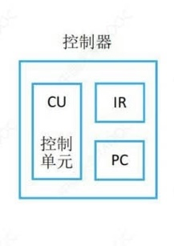

硬件的组成
冯诺依曼机的特点：
计算机由五大部件组成
- 输入设备、输出设备、存储器、运算器、控制器
指令和数据以同等地位存储在存储器中，并按地址询问
指令和数据均以二进制代码表示
- CPU区分指令和数据的依据是指令周期的不同阶段
- 数据由指令的地址码给出
指令=操作码+地址码。操作码用来表示操作的性质，地址码用来表示操作数在存储器中的位置
指令在存储器内按顺序存放。通常，指令是顺序执行的，在特定条件下可根据运算结果或根据设定的条件改变执行顺序
早起冯诺依曼机以运算器为中心，输入输出设备通过运算器与存储器传送数据
是单处理机
基本工作方式是控制流驱动方式
现代计算机的特点：
计算机 = 主机+输入/输出设备
主机 = CPU+主存
CPU = 运算器+控制器
- 运算器：算术运算和逻辑运算
- 控制器：指挥各部件使得程序执行
存储器：存放数据和指令（核心）
输入设备：将信息转换为机器能够识别的形式
- 鼠标、摄像头
输出设备：将结果转换为人们熟悉的形式
- 显示器、音响
以主存储器为核心

存储器
存储器包括MAR、MDR、时序控制逻辑、存储体 存储体如图可见由若干个存储元(unit)组成 相关知识：
- 存储元：存储二进制的电子元件，每个存储元可以存1bit
- 存储单元：每个存储单元存放一串二进制代码
- 存储字：存储单元中二进制代码的组合
- 存储字长：存储单元中二进制代码的组合
- 机器字长：计算机能一次处理的二进制代码长度
- 指令字长：指令的二进制长度
- 数据字长：数据总线一次能并行传送信息的次数
- MAR(地址寄存器)：用于寻址，位数=存储单元的个数/地址码的长度（现代计算机已经把MAR放到CPU中）
- MDR(数据寄存器)：用于暂存数据，位数=存储字长
- 时序控制逻辑：用于产生存储器操作所需的各种时序信号
1个字(word)=16bit(不同计算机可能不同) 1个字节(1Byte)=8bit 1B=8b
运算器
- ACC(Accumulator): 累加器，用于存放操作数，或运算结果
- MQ(Multiple-Quotient Register): 乘商寄存器，在乘除运算时用于存放操作数或运算结果
- X: 通用的操作数寄存器，用于存放操作数
- ALU(Arithmetic and Logical Unit): 算术逻辑单元，是运算器的核心
控制器

- PC: 程序计数器，存放下一条指令的地址，并跟踪下一条要执行的指令的地址
- IR: 指令寄存器，存放当前正在执行的指令
- CU: 控制单元，分析指令，给出控制信号
计算机系统的细节
- CPU: 中央处理器
- PC: 程序计数器
- MAR: 存储器地址寄存器
- ALU: 算术逻辑部件
- IR: 指令寄存器
- MDR: 存储器数据寄存器
- GPRs: 通用寄存器组（由若干通用寄存器组成，早起就是累加器）
程序执行过程：
例子：
- 下面的过程用这段C++代码举例说明
xxxxxxxxxx41int a=2, b=3, C=1.y=0;2void main(){3y=a*b*c;4}程序执行前
数据和指令事先存放在存储器中，每条指令和每个数据都有地址，指令按序存放，指令由OP(操作码)、ADDR(地址码)字段组成，PC指向第一条指令
- 指令就像取件码，指令参考下图内存的状态，0-4号为操作码，也就是代码逻辑
- 数据就是快递包裹，5-8号为数据
此时内存的状态为

加小括号指元件内的数据，如(MAR)指MAR里的内容
(PC)->MAR指PC中的数据存放到MAR中
M(MAR)->MDR指主存储器中MAR的数据放到MDR中
程序执行
(PC)=0，指向第一条存储地址

- (PC)->MAR，导致(MAR)=0
主存储器会根据(MAR)在存储体中寻找0号位置的数据
然后将存储体中0号位置的数据放到MDR中，M(MAR)->MDR，此时(MDR)=000001 0000000101
(MDR)->IR, (IR)=000001 0000000101
- MDR拿到指令，返回给IR指令寄存器
OP(IR)->CU，IR将操作码给CU，CU判断操作码是取数指令
CU控制IR将地址码 发送给MAR，Ad(IR)->MAR，导致(MAR)=5
- (MAR)=0000000101=5
MAR去存储体中取5号地址的数据，
将数据返回给MDR，M(MAR)->MDR，导致(MDR)=
0000000000000010=2(MDR)->ACC，MDR将数据送到ACC
到此就把a读到ACC中等待后面的指令执行，PC会自动+1，(PC)=1，然后循环1-9步直到(PC)=4执行后停止
(PC)->MAR，导致(MAR)=1
主存储器会根据(MAR)在存储体中寻找1号位置的数据
然后将存储体中1号位置的数据放到MDR中，M(MAR)->MDR，此时(MDR)=000100 0000000110
(MDR)->IR, (IR)=000100 0000000110
- MDR拿到指令，返回给IR指令寄存器
OP(IR)->CU，IR将操作码给CU，CU判断操作码是乘法指令
CU控制IR将地址码 发送给MAR，Ad(IR)->MAR，导致(MAR)=6
- (MAR)=0000000110=6
MAR去存储体中取6号地址的数据，
将数据返回给MDR，M(MAR)->MDR，导致(MDR)=
0000000000000011=3(MDR)->MQ，导致(MQ)=
0000000000000011=3- 关于乘法运算，被乘数3会被放到MQ，乘数会被放到通用寄存器X，ALU会实现乘法运算然后放到ACC
(ACC)->X，导致(X)=2
(MQ)*(X)->ACC，由ALU实现乘法运算，导致(ACC)=6，如果乘积太大，则需要MQ辅助存储
到此执行完
a*b，(PC)=2
(PC)->MAR，导致(MAR)=2
主存储器会根据(MAR)在存储体中寻找2号位置的数据
然后将存储体中2号位置的数据放到MDR中，M(MAR)->MDR，此时(MDR)=000011 0000000111
(MDR)->IR, (IR)=000011 0000000111
- MDR拿到指令，返回给IR指令寄存器
OP(IR)->CU，IR将操作码给CU，CU判断操作码是加法指令
CU控制IR将地址码 发送给MAR，Ad(IR)->MAR，导致(MAR)=7
- (MAR)=0000000111=7
MAR去存储体中取7号地址的数据，
将数据返回给MDR，M(MAR)->MDR，导致(MDR)=
0000000000000001=1(MDR)->X，导致(X)=
0000000000000001=1(ACC)+(X)->ACC，导致(ACC)=7，由ALU实现加法运算
到此执行完
a*b+c，(PC)=3
(PC)->MAR，导致(MAR)=3
主存储器会根据(MAR)在存储体中寻找3号位置的数据
然后将存储体中3号位置的数据放到MDR中，M(MAR)->MDR，此时(MDR)=000010 0000001000
(MDR)->IR, (IR)=000010 0000001000
- MDR拿到指令，返回给IR指令寄存器
OP(IR)->CU，IR将操作码给CU，CU判断操作码是存数指令
CU控制IR将地址码 发送给MAR，Ad(IR)->MAR，导致(MAR)=8
- (MAR)=0000001000=8
(ACC)->MDR，导致(MDR)=7
MAR等MDR拿到数据后会在存储体中找到8号位置
将(MDR)放到地址为8的存储单元，导致y=7
此时执行完
y=a*b+c，(PC)=4
(PC)->MAR，导致(MAR)=4
主存储器会根据(MAR)在存储体中寻找4号位置的数据
然后将存储体中4号位置的数据放到MDR中，M(MAR)->MDR，此时(MDR)=000110 0000000000
(MDR)->IR, (IR)=000110 0000000000
- MDR拿到指令，返回给IR指令寄存器
OP(IR)->CU，IR将操作码给CU，CU判断操作码是停机指令
(利用中断机制通知操作系统终止该进程)
到这里程序已经执行完毕，其中
- 1-4步均为取指令操作(必经步骤)
- 5步均为分析指令操作(必经步骤)
- 6-最后一步均为执行 取/乘法/加法/存 等指令(不同指令的具体步骤不同)
- 计算机只有识别到停机指令后才会通知操作系统终止该进程
计算机软件
| 应用软件 | 系统软件 |
|---|---|
| 办公软件 多媒体软件 ...... | 操作系统 网络服务程序 语言处理程序 数据库管理系统 ....... |
三个级别的语言
机器语言
- 计算机唯一可以直接识别和执行的语言
汇编语言
- 由汇编程序(系统软件)翻译为机器语言后再执行
高级语言
一种是经过编译程序得到汇编语言，然后得到机器语言在执行
- 编译型语言，如Java，C，C++
- 高级语言->汇编语言->机器语言
一种是由高级语言程序直接翻译成机器语言
- 解释型语言，如python，javascript
- 高级语言->机器语言
翻译程序
汇编程序（汇编器）
- 汇编语言-->机器语言
解释程序（解释器）
- 边解释边执行
编译程序（编译器）
- 高级语言-->汇编语言-->机器语言